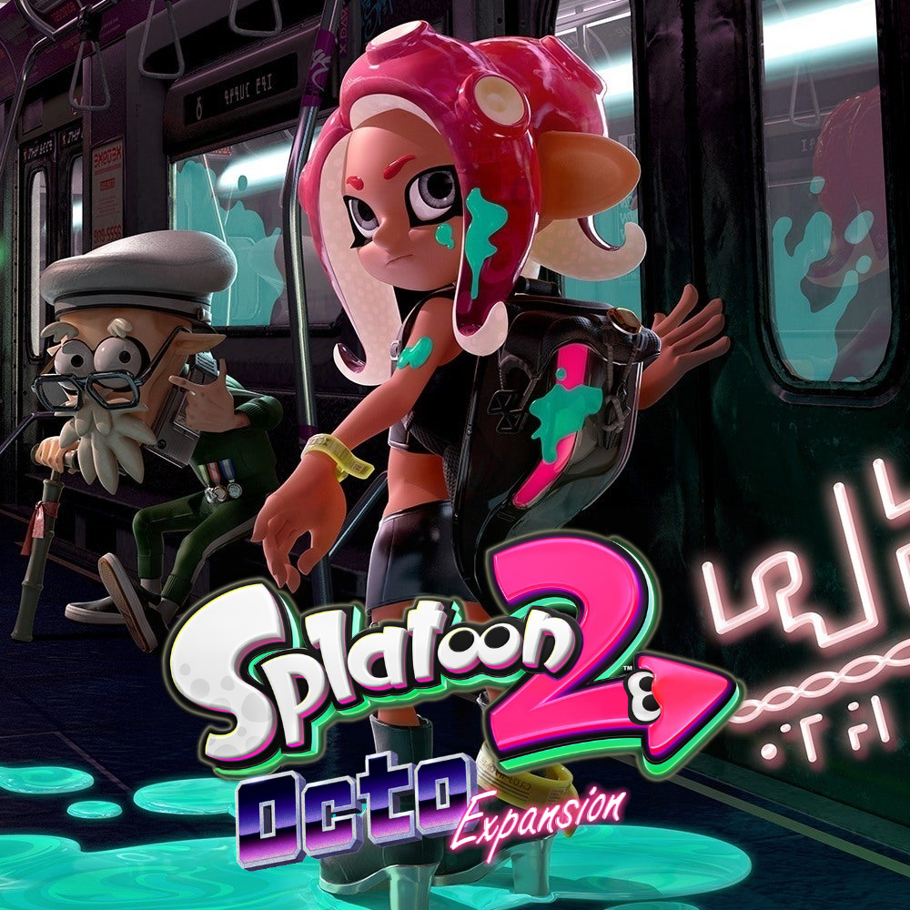

Octoling Arrival
Once development began on Splatoon 2's free updates, the opposite of the Inklings, the Octolings, were considered to be added to the game. However, this was intiially rejected because they couldn't just place them into the game in a non-antagonistic role without an explanation. Eventually, producer Hisashi Nogami decided on the expansion to allow players to explore a deeper part of the game's world, as well as put them into the view of an Octoling for the first time to show the difference between the Octolings' and Inklings' cultures.
Splatoon 2: Octo Expansion was revealed during a Nintendo Direct on March 8, 2018, and was released 3 months later on June 13, 2018. It's a new single-player campaign focusing on an amnesiac Octoling who is trapped in a cavern-like subway station. Their mission is to reach the surface by collecting 4 "thangs" in various trials. They're assisted by Cap'n Cuttlefish of the group "The Squidbeak Splatoon" and Pearl and Marina of the music duo "Off the Hook".